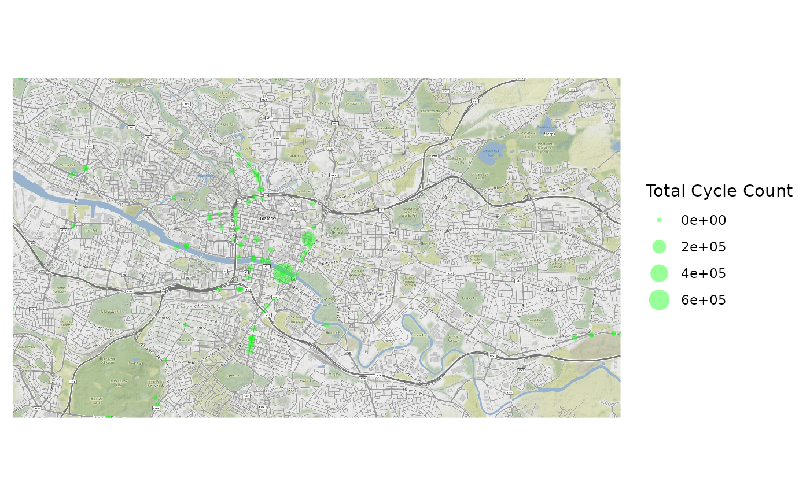

Basic Example
basic-usage.RmdIntro
A good place to start is by browsing datasets on opendata.scot. You can filter and
search to find datasets of interests. The openscotland R
package can then download and save the datasets you are interested in.
This helps to quickly start analysis without needing to work out how to
save, organise and import data in R.
Search
The opendatascotland package has a basic search function
for finding available datasets and viewing their metadata. Use
ods_search() function to view metadata for all datasets or
filter by matching search terms in the dataset’s title.
library(opendatascotland)
# View all available datasets and associated metadata
all_datasets <- search_ods()
# Search dataset titles containing matching terms (case insensitive)
single_query <- search_ods("Number of bikes")
# Search multiple terms
multi_query <- search_ods(c("Bins", "Number of bikes"))
head(multi_query)
#> # A tibble: 6 × 11
#> unique_id title organization notes category url resources licence
#> <chr> <chr> <chr> <chr> <list> <chr> <list> <chr>
#> 1 Salt_Bins_Dumfries_… Salt… Dumfries an… "<p>… <chr> /dat… <df> UK Ope…
#> 2 Public_Litter_Bins_… Publ… Dundee City… "<p>… <chr> /dat… <df> UK Ope…
#> 3 Solar_Powered_Compa… Sola… Dundee City… "<p>… <chr> /dat… <df> Open D…
#> 4 Number_of_bikes_ava… Numb… Cycling Sco… "<p>… <chr> /dat… <df> UK Ope…
#> 5 Number_of_bikes_ava… Numb… Cycling Sco… "<p>… <chr> /dat… <df> UK Ope…
#> 6 Number_of_bikes_ava… Numb… Cycling Sco… "<p>… <chr> /dat… <df> Creati…
#> # ℹ 3 more variables: date_created <chr>, date_updated <chr>, org_type <chr>Note, search term is case-insensitive but word order must be correct (there is no ‘fuzzy’ matching).
Download
Currently, only datasets available in .csv,
json or .geojson can be downloaded. These
formats cover the majority of data available. You will be warned if a
dataset can’t be downloaded.
To download data, you can either download the metadata using
search_ods(), then pass that data frame to
get_ods()
query <- search_ods("bins")#> Warning: One or more parsing issues, call `problems()` on your data frame for details,
#> e.g.:
#> dat <- vroom(...)
#> problems(dat)data <- get_ods(query)Or use the search argument in
get_ods(search="my search term") to search and download any
matching datasets in one step.
data <- get_ods(search = "Grit bins")By default, you will be asked if you want to save the data locally on the first download. Optionally, you can refresh the data or avoid being asked to save data.
data <- get_ods(search = "Number of bikes", refresh = TRUE, ask = FALSE)Plot
Once you have downloaded the dataset(s), you may wish to plot or map the data. Here’s a short example of how plotting can be done.
data <- get_ods(search = "Recycling Point Locations")The get_ods() function returned a named list of data
frames - lets select the one we want by name:
recycling_points <- data$Recycling_Point_Locations_Dundee_City_CouncilOr alternatively select the first data frame in the list using index of 1.
recycling_points <- data[[1]]Geojson datasets are automating converted to simple feature ‘sf’ data. As we can see in the example the data frame is classed as “sf” which means spatial / geometry attributes are baked in.
class(recycling_points)
#> [1] "sf" "data.frame"You can see a geometry variable which contains the
spatial co-ordinates. This allows the plot() function to
automatically plot the coordinates.
JSON
Some data is only available in JSON or CSV formats which does not
automatically have spatial geometry. For example, the Glasgow cycling
counts does have latitude and longitude
variables but is downloaded as JSON and therefore does not have spatial
geometry added by default. This type of data is converted to a data
frame.
Let’s download the Glasgow cycle counts data which is only available in JSON format.
cycle_count <- get_ods(search = "lasgow City Council - Daily cycling counts from automatic cycling counters")
cycle_count <- cycle_count[[1]]
cycle_count
#> # A tibble: 1,000 × 10
#> provider area siteID location latitude longitude startTime endTime count
#> * <chr> <chr> <chr> <chr> <dbl> <dbl> <chr> <chr> <int>
#> 1 Glasgow Cit… Glas… GLG04… Bisland… 55.9 -4.28 2023-04-… 2023-0… 33
#> 2 Glasgow Cit… Glas… GLG03… London … 55.8 -4.22 2023-04-… 2023-0… 119
#> 3 Glasgow Cit… Glas… GLG03… Hawthor… 55.9 -4.24 2023-04-… 2023-0… 41
#> 4 Glasgow Cit… Glas… GLG03… CP St A… 55.8 -4.29 2023-04-… 2023-0… 253
#> 5 Glasgow Cit… Glas… GLG03… Pollok … 55.8 -4.30 2023-04-… 2023-0… 146
#> 6 Glasgow Cit… Glas… GLG03… Glasgow… 55.9 -4.25 2023-04-… 2023-0… 0
#> 7 Glasgow Cit… Glas… GLG03… Barrhea… 55.8 -4.32 2023-04-… 2023-0… 94
#> 8 Glasgow Cit… Glas… GLG03… Balshag… 55.9 -4.33 2023-04-… 2023-0… 174
#> 9 Glasgow Cit… Glas… GLG02… Balshag… 55.9 -4.33 2023-04-… 2023-0… 98
#> 10 Glasgow Cit… Glas… GLG02… CP Gars… 55.9 -4.26 2023-04-… 2023-0… 1510
#> # ℹ 990 more rows
#> # ℹ 1 more variable: usmart_id <chr>We can see the cycle count JSON has been converted into a ‘flat’
tabulated data frame. This data frame can now be plotted as a chart, in
the following example, let’s use the ggplot2 plotting
library to create a graph. We’ll display counts over time for each
location.
library(ggplot2)
# Convert character to date (to display date time correctly)
cycle_count$Date <- as.Date(cycle_count$startTime)
# Plot
ggplot(cycle_count, aes(x = Date, y = count, colour = as.factor(location))) +
geom_line() +
theme_minimal() +
theme(legend.position = "none")
This is a bit noisy so lets sum the counts for all locations to see total cycle counts.
library(ggplot2)
library(dplyr)
library(magrittr)
# Group by date and sum the count
sum_cycle_count <- cycle_count %>%
group_by(Date) %>%
summarise(`Total Count` = sum(count))
# Graph the new `sum_count` variable
ggplot(sum_cycle_count, aes(x = Date, y = `Total Count`)) +
geom_line(colour = "blue") +
theme_minimal()
We can also use the latitude and longitude columns to plot the points on a map.
library(sf)
#> Linking to GEOS 3.10.2, GDAL 3.4.1, PROJ 8.2.1; sf_use_s2() is TRUE
# Convert data frame into 'sf' geospatial dataframe
cycle_counts_geo <- st_as_sf(cycle_count, coords = c("longitude", "latitude"))
# Sum counts by location
cycle_counts_geo_sum <- cycle_counts_geo %>%
group_by(location) %>%
summarise(`Total Cycle Count` = sum(count))
# plot
c <- ggplot(cycle_counts_geo_sum) +
geom_sf(aes(size = `Total Cycle Count`), colour = "blue", fill = NA) +
theme_minimal()
c
Can you guess which points in Glasgow are most popular for cyclists? We can add a base layer map to reveal the streets.
library(ggmap)
library(purrr)
# Create bounding box to download background street map layer
bbox_glasgow <- map_dbl(st_bbox(cycle_counts_geo_sum), 1)
names(bbox_glasgow) <- c("left", "bottom", "right", "top")
# Download background layer
glasgow <- suppressMessages(ggmap(get_stamenmap(bbox_glasgow, zoom = 14)))
# Plot background with cycle counts on top
cycle_map <- glasgow + geom_point(data = cycle_counts_geo_sum,
aes(
x = unlist(map(geometry,1)),
y = unlist(map(geometry,2)),
size = `Total Cycle Count`),
col="green",
pch=16,
alpha=0.4
) +
theme_minimal() +
theme(axis.title = element_blank(),
axis.text = element_blank())
cycle_map
#> Warning: Removed 1 rows containing missing values (`geom_point()`).
Looks like Tradeston area is a hot spot for cyclists.